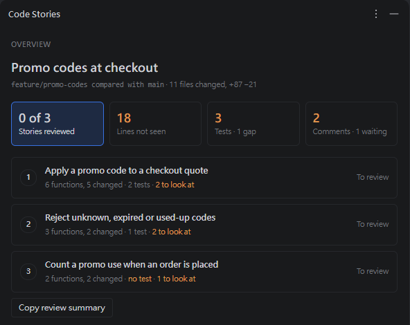
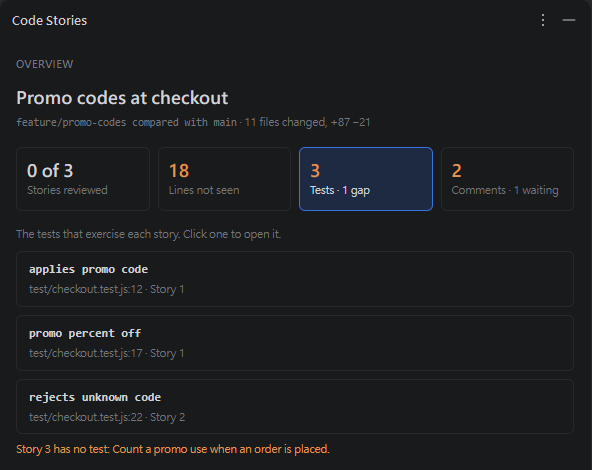

1 of 8
Start at the overview
The overview has four counters. Each counter is also a tab: stories, lines, tests and comments.
Every changed line is counted. You see the lines that no step shows, and the stories that have no test.


